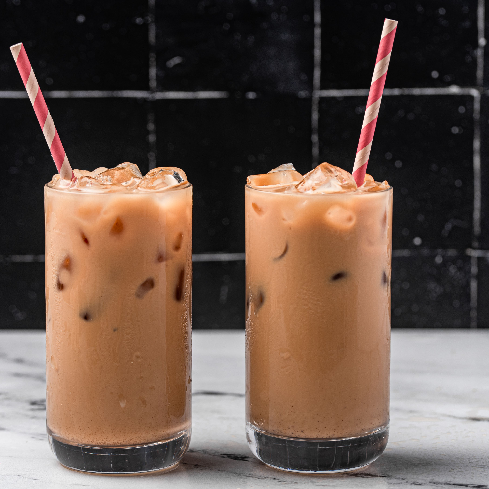

Milk Tea

A smooth, creamy Hong Kong style milk tea
The creamy milk tea is made by simmering tea with sweetened condensed milk. It is a delightful pick-me-up drink after a hot day outside.
The evaporated milk makes the milk tea to be mellow-flavored. This recipe is very simple to make with only three ingredients!
Ingredients
- 2 cups water
- 4 tablespoons black tea
- 1/4 cup of sweetened condensed milk
Steps
- Gather the ingredients.
- With the small saucepan, add in the water and tea leaves. Put under medium heat.
- After the tea is with low boil, turn the heat to low heat. Simmer for 3 minutes
- Remove from heat. Stir in the sweetened condensed milk. Return to the heat.
- Bring it to boil. Simmer for 3 minutes.
- Strain the milk tea.
- Pour it hot or over ice. Enjoy!